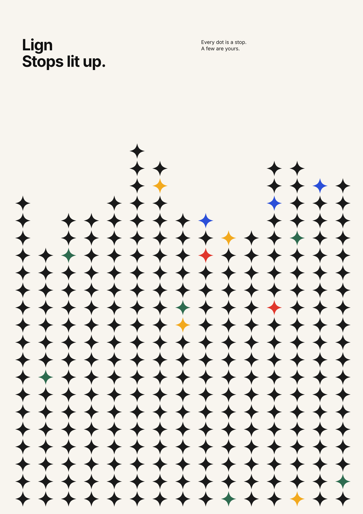

Lign · Full case study

Lign: a personalised trotro for your school or workplace
Download case study PDF · 232 KB1. Introduction
Lign is a bus app for students and workers travelling to one institution, a school, hospital, factory or company. Each rider signs in with an ID from that institution, buys tickets and books a seat on buses run for their own community.
I was the UX/UI designer on Lign, my final year project, and I also supervised the handoff to the developer who built it. The work ran through 2025 and 2026, designed entirely in Figma.
The core question: when fares and timetables feel unpredictable, what does a transport app need to give back a sense of control, without pretending to fix the roads themselves?
2. The problem
Trotros carry around 70% of trips in Accra, so most students have no real alternative when the service is unreliable. Fares also move often: unions have announced increases of 8 to 20% within the past year alone, usually tied to fuel prices. For a student living on a termly or monthly allowance, that is hard to plan around.
I felt this directly. Fares kept rising with no warning, and drivers went on strike often enough that getting to class on time was never guaranteed. My school ran two branches, Tesano and La Paz, so missing the one bus on your side could cost a whole morning. Published research backs this up more broadly: transport problems are linked to late arrival and missed classes for students who depend on public transport.
I ran two rounds of research this year to check this wasn't just my own experience. A Google Forms survey reached 14 commuters (11 students, 3 workers) through friends. 13 named long waiting times as a problem, 13 said they just wait at the stop with no information, and 9 said they would definitely want an institutional bus. Separately, I had in-person conversations with 5 to 10 students, mostly about how fare rises affected them and what their school could do. These were casual conversations, not structured interviews, so I treat them as context rather than findings.
I also asked 2 fleet managers how they run buses today. Both already track vehicles with a GPS dashboard and want delay alerts, and both want the system to connect with the HR and payroll tools they already use. One operational pain point they raised, driver attitude, echoed what pushed me to build Lign in the first place.
I'm told that the University of Ghana and KNUST both run shuttle buses without a system like this, from a friend who studies at KNUST. I haven't confirmed this myself, so I treat it as a steer rather than a fact, and it's part of why I believe the problem isn't unique to my own school.
3. The app
Sign-in starts with an institutional ID. It unlocks the app, ties the rider to one institution's buses, and carries a role, student or teacher, so a school with both groups can run separate services. A Ghana Telecom ID will not work on a University of Ghana Legon bus, and the reverse is also true.
Tickets work as a bulk, deferred-activation model. A rider buys a set of tickets for the term in one purchase, and each ticket sits in a list as a coin. A yellow coin marked I is inactive, a green coin marked A is active. The rider long-presses a coin to activate it before boarding, so only the ticket being used that day is live.
Any tickets left unused at the end of the semester are refunded. This only works if the institution agrees to hold and return that money, so it depends on buy-in from the school or company, not just the rider.
Hop-On covers the moment the regular bus is missed. The Tickets tab has three views: Incoming, for live buses on the way, Schedules, for the week's timetable, and My Trips, for ride history. From there, Book Now opens Hop-On, which shows the nearest bus passing the rider's side, Tesano or La Paz, with seats left, ETA and distance updating live on screen.
The ETA display was not in my first version. I showed early screens to three informal testers, and they were confused about when a bus would actually arrive. Adding a live ETA, making the ticket coins show their state more clearly, and adding empty states to the tickets list and notifications, all came directly from watching that confusion.
4. Design process
I first considered making transport part of school fees, paid by the institution for every student. I rejected this. It would force fees up for everyone, including students who rarely use the buses.
Instead, Lign treats transport as its own operation. A school can run its own buses, or partner with outside investors who bring theirs, and only riders pay into it. This keeps the cost tied to use, not folded into a fee every student carries.
I assumed the ticketing side, the coin states and the Tickets tab, would be the hardest part for people to follow. When my brothers used the prototype, the opposite happened. They found My Trips, sitting inside the Tickets tab with past and ongoing trips together, more straightforward than apps like Uber, where trip history sits behind the profile. I kept that structure rather than moving it.
The trade-off I kept deliberately is the deferred-activation ticket model itself. Buying a term's worth of tickets in one go, then activating one coin at a time, adds a small extra step before boarding. I judged that step worth keeping, because it lets the refund at semester end work cleanly, unused tickets stay untouched until they are activated.
5. Challenges
The biggest constraint was scale. Lign is not one app, it is riders, drivers, fleet managers and institutions, all needing their own screens and logic, and I designed it alone.
The hardest problem was the driver side. I expected it to add 10 screens at most. Once I started designing it properly, routes, schedules, passenger counts, it kept growing well past that, and I could not finish it inside the project's timeline.
The design responds by splitting scope. The rider-facing app, sign-in, tickets, Hop-On, is complete. The driver app and the admin dashboard are pushed to version 2, rather than rushed to an unfinished state alongside the rest.
I have not solved the driver side yet. I am still building it, and still working to make the parts that exist better.
6. What's next
Lign has not shipped. It exists as a prototype, shown so far only to three informal testers. I have not run any formal usability testing, and I want to be upfront about that rather than imply otherwise.
The activate-before-boarding pattern I designed for tickets is not new on its own. Research on mobile fare payment systems elsewhere has studied the same flow, buy a pass, activate it just before boarding, show it to be validated, and found it workable at the scale of a full transit agency. That gives me some confidence the core mechanic holds up, even though my own version hasn't been tested yet.
If I tested Lign properly, I would run structured usability sessions with students from my own school's two branches, Tesano and La Paz, since they are the actual riders the app is built for. I would watch them complete real tasks, activate a ticket, book a Hop-On bus, check a schedule, rather than ask what they think of it.
Version 2 is already in progress. It adds the driver app and the admin dashboard, plus an AI layer to help drivers navigate around congestion. I also want to build features for institutions themselves, separate from the student-facing side, so a company or hospital running its own fleet can manage it directly.
References
- GIZ. (2023). Ghana Mobility Study: Mobility as a Service Opportunities. Informal trotro transport accounts for close to 70% of work trips in Accra.
- Agyemang, E., & others. (2026). Ghana's transport system is chaotic: how it can move more people with fewer vehicles. The Conversation. Over 70% of Ghanaians rely on informal transport, trotros and taxis, for daily mobility.
- GPRTU/GRTCC fare announcements, reported in Citinewsroom and GhanaWeb (2025 to 2026). Documents fare increases of 8 to 20% tied to fuel prices over the past year.
- World Bank. (2020). Policy Note: Addressing Urban Mobility Challenges in Ghanaian Cities. Covers affordability and mode choice constraints for lower-income commuters in Accra, Kumasi and Tamale.
- Transportation and academic outcomes review, in Educational Review, 76(3), 2022. Longer travel times and transport challenges are linked to adverse academic outcomes, including lateness and missed classes.
- Agbo, D., & others. The case of Paratransit: 'Trotro' service data as a credible location addressing of road networks in Ghana. Journal of Transport Geography (ScienceDirect). Ghana-specific paratransit research used to ground the trotro system described here.
- Williams, S., White, A., Waiganjo, P., Orwa, D., & Klopp, J. (2015). The digital matatu project: Using cell phones to create an open source data for Nairobi's semi-formal bus system. Journal of Transport Geography, 49, 39 to 51. Precedent for digitising an informal African transit system with mobile technology.
- Yang, H., & others. (2019). An evaluation of the benefits of mobile fare payment technology from the user and operator perspectives. Transportation Research Part A (ScienceDirect). Studies a buy, activate before boarding, display to validate ticketing flow, the same pattern used for Lign's ticket coins.
Want to keep it or share it? Download the full case study as a PDF.
Download case study PDF · 232 KB